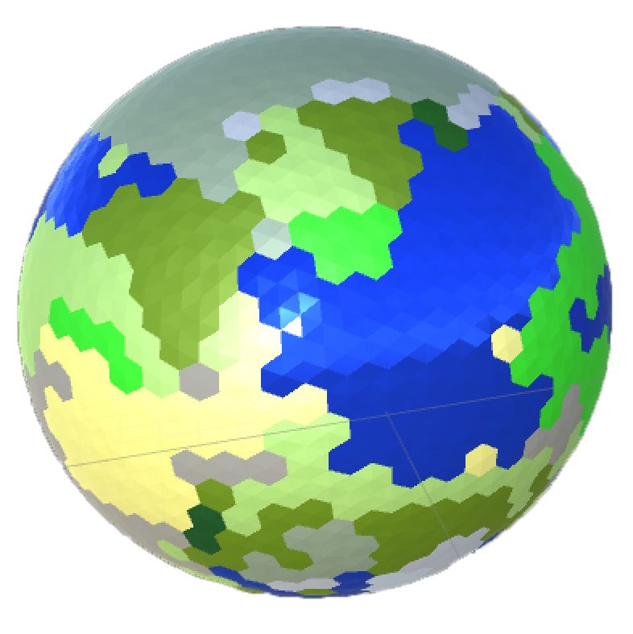

Hello World
Posted on Fri 27 January 2017 in devblog
My Story
As with any good introduction into new territory, this story starts here at hello world. And I'll build from there. Just want to provide a quick introduction for myself and to provide a little context to what I'm trying to do with this blog.
First, I am an aspiring game designer and developer. This has been a lifelong dream, but I have really only started working towards it in the past year or so. I am a software developer by trade and my real job is currently working in network and application security, focusing on secure software development and architecture along with cryptography and VPN technologies.
I am also a husband and father and part of a very active household. This put together with a real job means that I get limited time to work on gamedev. So my progress on projects and with this blog will not be at a rapid pace. But I continue to do what I can.
My Purpose
So, yes, this will be yet another game developer blog. There's tons of them out there, so what am I planning on doing that will make this any different? Honestly, nothing. My intent isn't to be flashy or new, but to simply document some of my experiences as a newcomer to game development. I plan to share some of the struggles I've had, including how I've overcome them. Tips, tricks, ideas and even failures are all fair game.
Throughout my learning experience, I've googled this and borrowed that. I've leaned heavily on those that have come before me and my sincere hope is that someone with similar interests and experience may stumble upon one of my articles and it may help them.
Some of the topics I plan on covering include:
- Voxel engine and isometric surface extraction
- Procedural generation, in particular planet-based terrain systems
- Constructed solid geometry
- Bezier patches
- Code/C# optimizations
Sneak Peek
In a not-so-distant future post I plan to cover a little on procedure generation of a planet. I had some help in getting started here, so I'll reference that awesome work and what I've done to make it my own. 